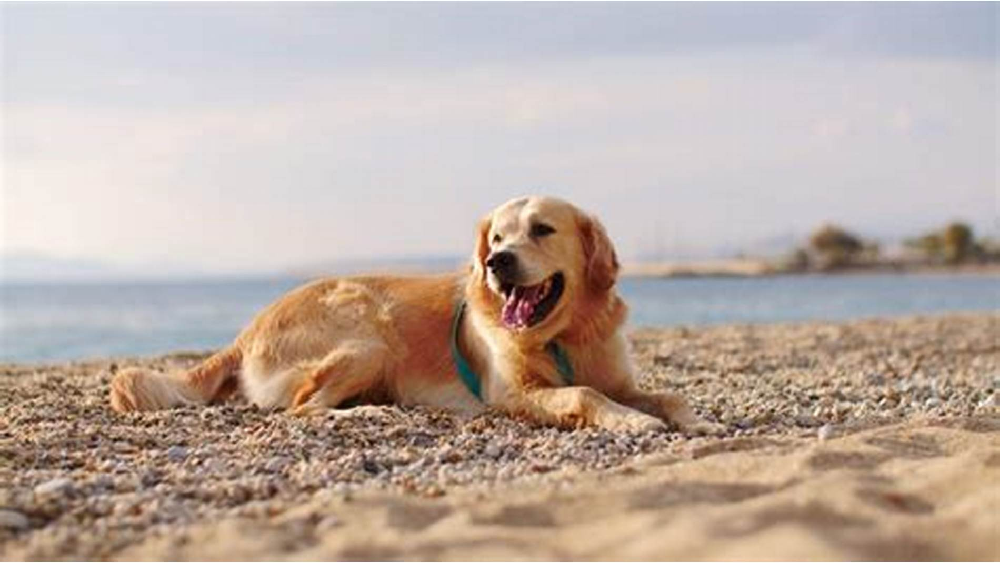

Dette er hunden min heter Rudolf og han er 2 år
Rudolf spiser bare hundemat de fleste dagene. Noen dager får han også en brøskive med leverpostei.
Han leker ofte ute og av og til inne. Han elsker mest å leke med bamser og baller.